If you haven't heard, I picked up some new hobbies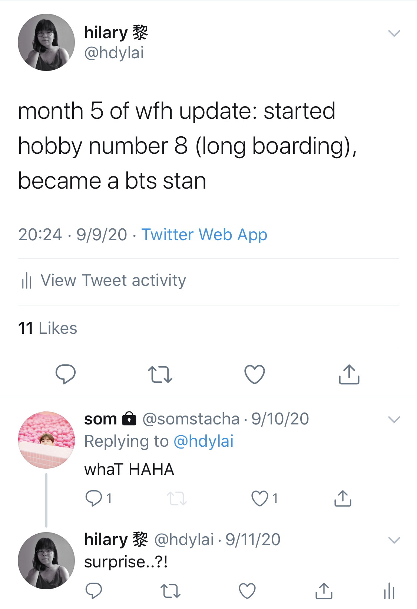 recently.
— On revisiting a part of my middle school self
— On deluding myself into exercising
— Books I started this month
— Other nice things
Within the first 24 hours of this month, I built a single webpage (a.k.a. filler page for my non-existent public portfolio) from scratch for the first time, and finally learned how to use Git / GitHub (not as if I don't have to to use it for work already). Learning how to use GitHub was like learning a new language with very little to anchor yourself to, extremely disorienting. Looking forward to seeing how I will be able to top this achievement of the month. (Acknowledging that my placeholder page follows the generic format of about me's that I was musing apathetically about last month, but again, trying to stay positive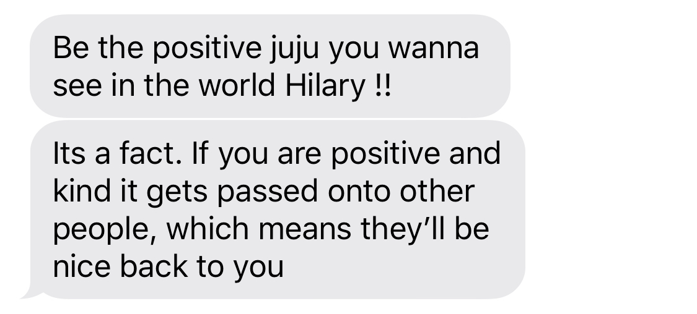.)
I'm also proud to announce I bought my first typeface license a.k.a. have come a long way from my GitHub scraping days while in high school (do you remember this, @by.co?).
Grandma willingly asked for and ate pizza for the first time in the history of my consciousness. A momentous moment if you will. She also (reluctrantly) let me have a mini-photoshoot with her modeling my hat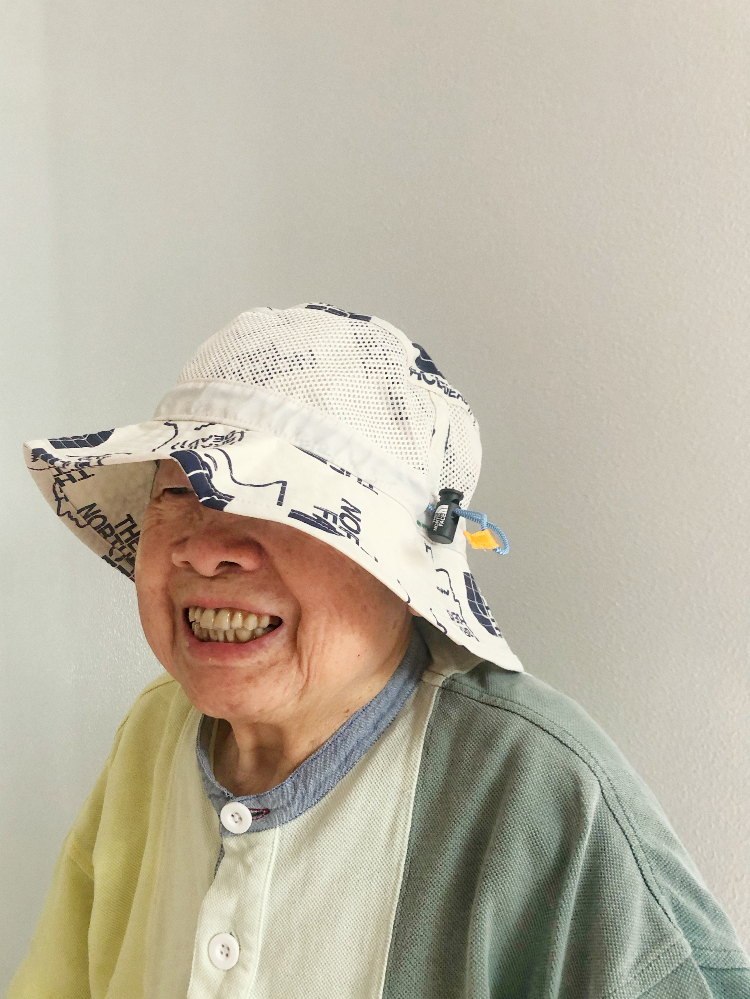 against the wall in our laundry room. I also found a new spot to temporarily settle my longing for NY-style pizza since coming back home.
I caught up with Time to Say Goodbye on "Itaewon Class" and class politics; and what to make of left-wing utopias while driving to Emily's house a couple days ago. I didn't know about the Wes Enzinna piece in Harper Mag (still in disbelief about their earlier published free speech letter) on the Minneapolis cop-free experiment until this episode, but refreshing as always to hear reflection upon the roles we'll continue take in organized politics (will we always have to expect and accept that our utopias end in loss?), especially in light of the ever-approaching election.
It took two plus years of Amber's insistent efforts for me to finally pull up some BTS performances on my own accord this month, beyond the ones she and Rachel would send me (and the time I was sat down for four hours to watch the newly released dance video for ON, in addition to old concert performances). One month deep in the wormhole later (see the current state of my Instagram discover page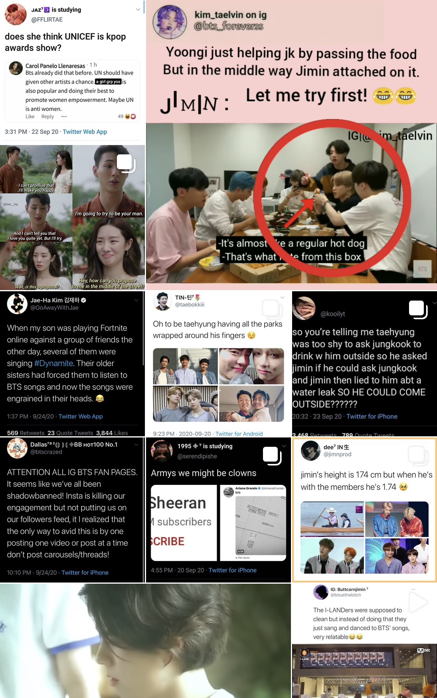 if you are curious as to how deep), I feel as if I've completed the last step, the one that I thought I would never revisit, to come full circle into regressing? evolving? back to something reminscent of my middle school self since coming home.
also linking:
Amber & Rachel's starter pack
my favorite tracks so far (spotify & soundcloud)
NPR Tiny Desk (Home) Concert
BTS on 2018 MMA, Idol
BTS on Carpool Karaoke
While I could probably go on about a number of reasons why BTS is a high quality source of artistry, entertainment, and escapism like any enthusiast, I've found myself mulling over why my returned fascination with a K-pop group evokes a similar degree of focus? emotional reliance? earnestness? to one experienced when I was younger, someone I imagine who was more impressionable and naive (at least I hope I've improved my self-awareness and discernment). On the other hand, my attitude towards fan culture has changed a lot since middle school and one that made and continually makes me hesitant about buying into this hype again; no longer do I look up, glassy-eyed, and accept things as they are at face value. I think this also is a result of the increasing lack of age gap between myself and prominent people in entertainment, and the accompanying wisdom (read: common sense and cynicism) that comes with age to understand they are also just...flawed human beings (hard to believe at times).
Reflecting upon my own moral compass as a creative, one of the interesting things to observe as a product of their fame is their role as (essentially mainstream) global artists rather than just artists in the Korean entertainment circle, and how that influences the perceived responsibility of their work and its resulting effects outside of their individual selves. I do think people need to own up to their work and therefore the consequences of their work, and this most definitely applies to people who are so prevalent in our current culture...especially BTS and why I think J-hope's impersonation of Black culture in "Chicken Noodle Soup" is problematic. But even more so is the lack of acknowledgement when the inappropriateness was revealed by fans...who then experienced a stupid amount of backlash for speaking "poorly" of their "idols".
Fan bases are good at creating monoliths, which end up backfiring on those who provide critique because they believe in these public figures are the good people fans believe them to be. If anything, it feels increasingly important for people to realize it's in the responsibility of supportive fans to be both congratulatory and critical of these public figures if fans believe they can be better? And want to see them be better? Especially if there are resources at their disposal for these public figures to take feedback and improve! Anyways, coupled with this and the melancholy I feel at times when I watch how the extreme nature of their job conditions them to be burdened by emotionally dependency on fan validation (and honestly, in addition to the history & connotations of the word in general), idols as a concept really shouldn't exist, for the sake of us and them.
I'm trying to be more unapologetic about my renewed, previously cringed at, interest in K-pop because it has also been a constructive vessel to evaluate my emotional maturity over the years, and perhaps a testament of the increased respect for East Asian pop culture that didn't exist as much when I was younger. It's cathartic that I no longer have feel unspoken shame that came with appreciating what was a minority subculture, and I sympathize for my past self for having to experience that shame. It's also been one of the new hobbies picked up in quarantine that has helped alleviate constraints of physical distance in my friendships; there are still experiences we can share with each other when we're physically apart.
Anyways, in the case you can't reach me one day, assume KTH1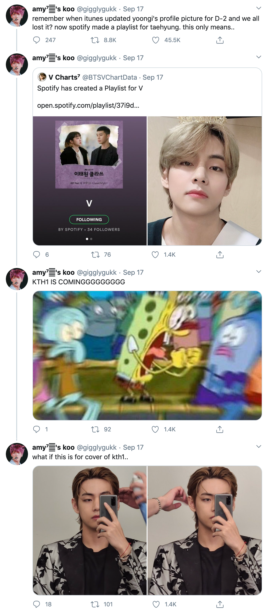 has been released and I will probably be out dissociating on a very long drive.
I picked up longboarding in September, and essentially, as my lead put it in our weekly, fully re-embracing my California roots. Letting out Grandma for her afternoon walk has been a good excuse to also spend some time outside to combat my lethargy, but also to have some goals to feel motivated to work on. One of the steepest challenges initially has simply been to find my balance as I ride, but I've also managed to carve consistently, picked up some basic dance steps like the 180, and attempt the cross-step and pivot. According to Sarah, this is what she imagines my ultimate form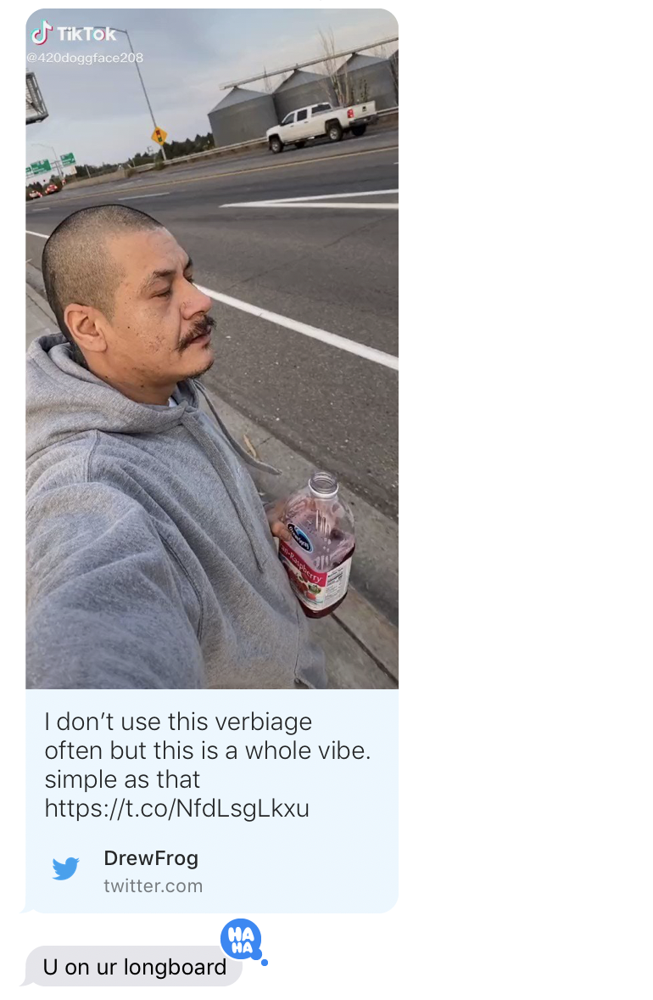 to be...working on it.
in September, and essentially, as my lead put it in our weekly, fully re-embracing my California roots. Letting out Grandma for her afternoon walk has been a good excuse to also spend some time outside to combat my lethargy, but also to have some goals to feel motivated to work on. One of the steepest challenges initially has simply been to find my balance as I ride, but I've also managed to carve consistently, picked up some basic dance steps like the 180, and attempt the cross-step and pivot. According to Sarah, this is what she imagines my ultimate form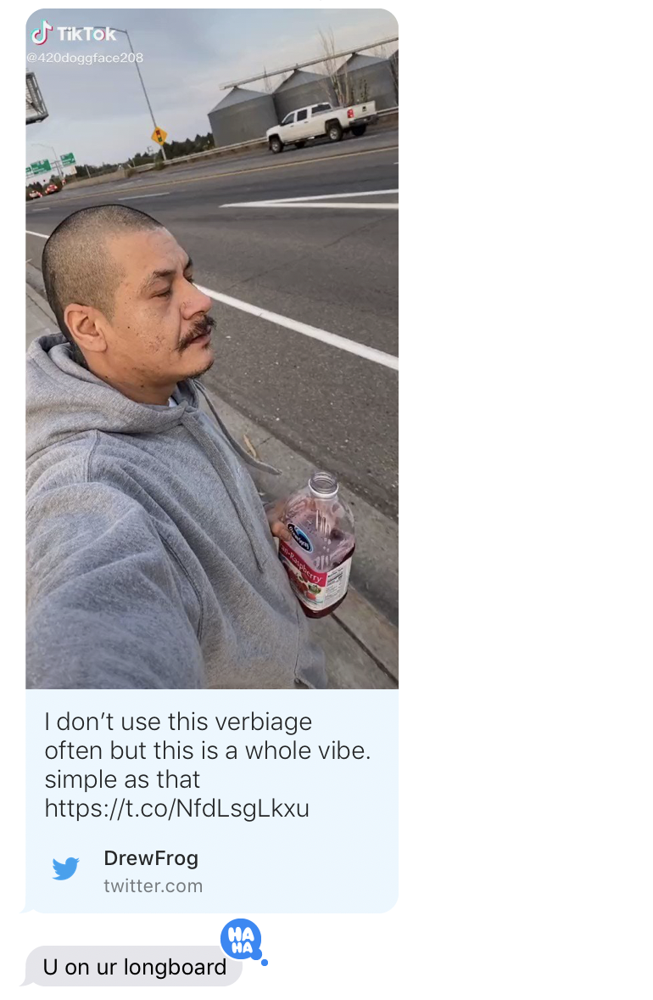 to be...working on it.
This month also marked my first time climbing since February, in addition to my first time climbing outdoors . It was hard and I can no longer do a pull-up, but climbing on the beach and by the waves is strangely exhilarating despite the very real fear of falling.
. It was hard and I can no longer do a pull-up, but climbing on the beach and by the waves is strangely exhilarating despite the very real fear of falling.
Ever since July, after my first month home where it had been so embedded in my daily routine, I've had an especially hard time trying to summon the motivation and desire to work out. It was easier to fight the general sense of apathy I've had towards my body when idleness didn't take up such a significant part of my daily life. My baseline of fitness over the recent years has been marked my ability to engage in activities such as climbing, whether or not I could progressively advance the grades of my climbs, or whether I could continue to fit in my clothes. I've never dieted or embarked on similar lifestyle changes because I had drawn the line at what seemed like sacrificing my pride, as if it was shameful to recognize that something was wrong about this physical vessel that enables me to do all these things that bring me joy in life.
My recent framing of activity as a delusion of getting myself to exercise is humourous but also makes me melancholic when I am honestly recognizing my desire for vanity over a sustainable priortization of my wellbeing. I want to feel pretty, but pursuing this ideal of my "best self" and "self-improvement" makes me believe that my self-confidence is conditional as it is futile. It feels sad to demand so much out of myself internally when there is no shortage of external expectations we are subjected to on a daily basis, that this feels more like a fight for autonomy than self-improvement. More so, it is heartbreaking to forget that we are fearfully and wonderfully made.
1. Protest. The Aesthetics of Resistance, from Lars Müller Publishers
2. The Three-Body Problem, Li Cixin
ILLUSTRATION Anna Syvertsson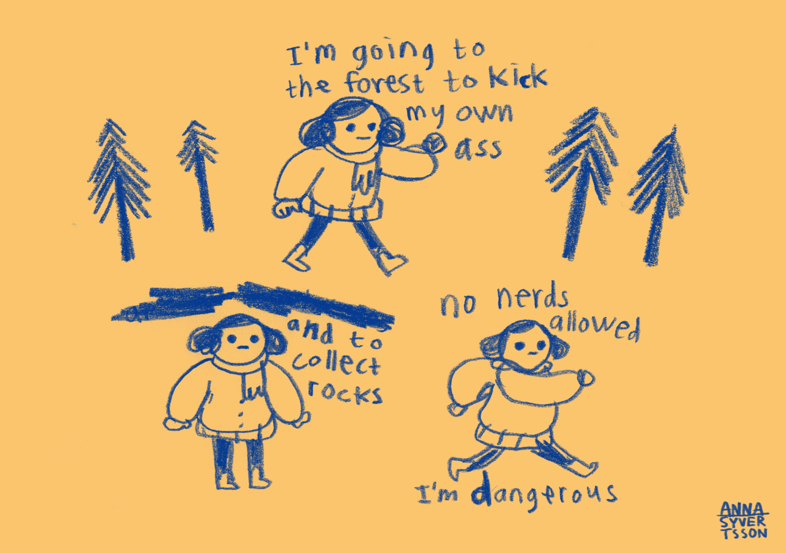
PHOTOGRAPHY "Assembly"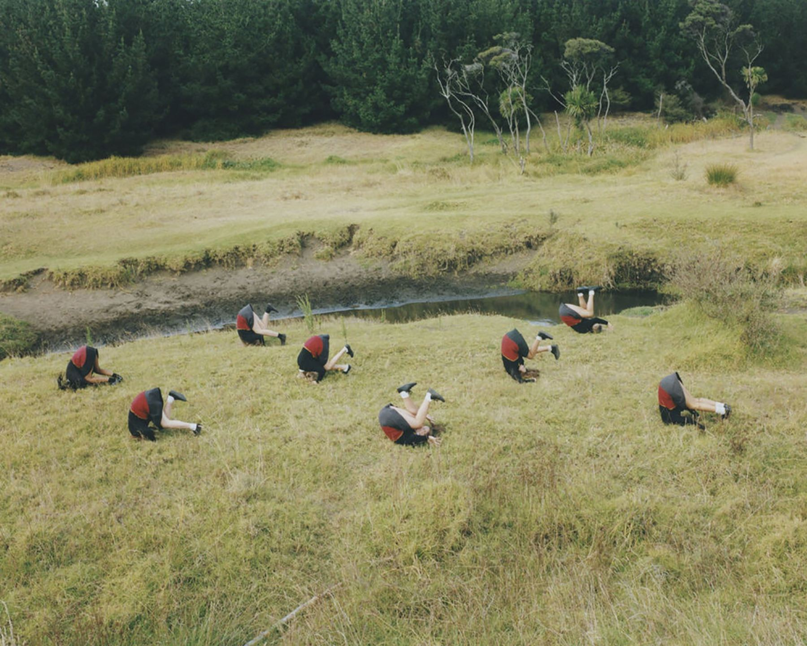, Osamu Yokonami (2019)
POETRY "Spoiler"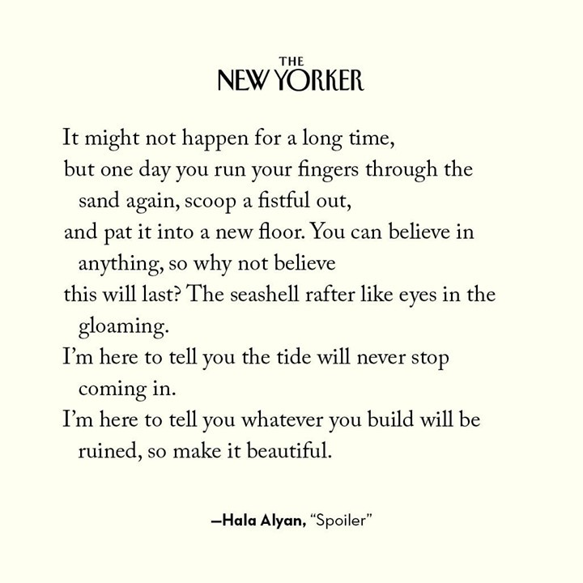, Hala Alyan (2020)
ACTIVITY Reading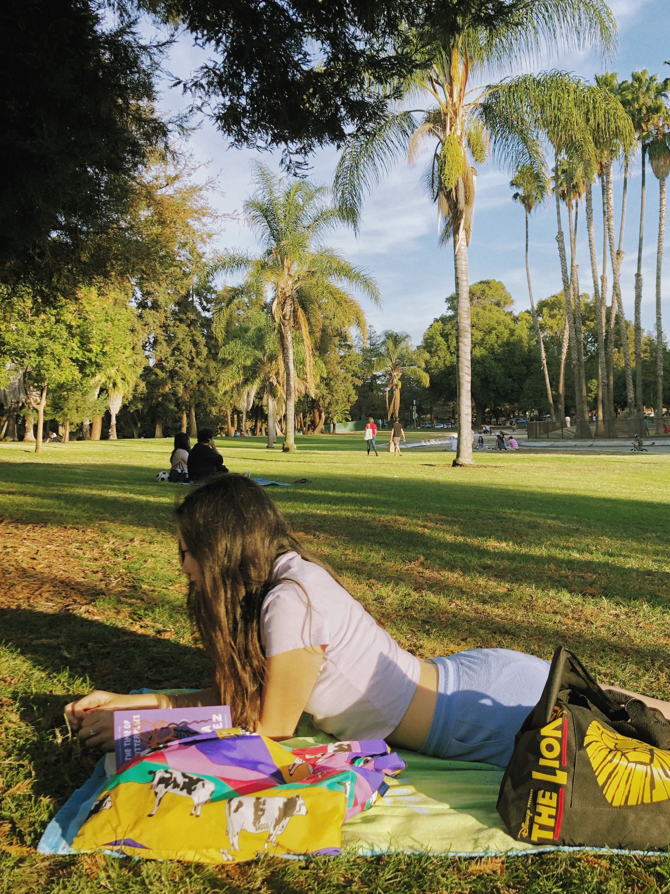 in the neighborhood park
GAME Words n' Thieves, created recently by my friends Emily & Renzo!